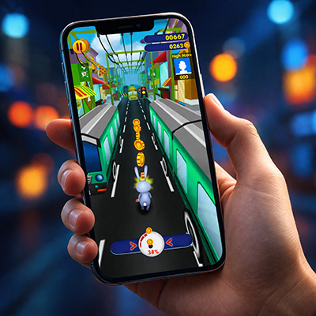

Le plaisir du jeu, sans telechargement
Joyplay est un service qui propose un acces illimite a plus de 38 jeux pour une duree d'un mois.
CONTINUER ET PAYERActiver en envoyant JPLAY au 84072
4,50 EUR / SMS + prix d'un SMS
Un portail mobile pour des jeux HTML5 populaires - aucun telechargement requis, les utilisateurs peuvent jouer directement dans leur navigateur. Apres l'achat de MyJoyplay, l'utilisateur a la possibilite de jouer a tous les jeux en ligne en illimite pendant 30 jours. Le prix du service est de 4,50 EUR. Il s'agit de frais uniques. L'activation du service : veuillez envoyer un SMS avec le texte JPLAY au 84072. En activant le service, vous confirmez que vous avez lu le reglement et que vous acceptez de recevoir gratuitement des informations de commercialisation et de publicite du fournisseur de service. Les frais ne comprennent pas l'utilisation de l'Internet mobile. Aide : 0170700354 du lundi au vendredi de 9h00 a 17h00 ou envoyez un e-mail a myjoyplay.fr@silverlines.info. Fournisseur de services kiwi mobile GmbH, Kokkolastr. 5, 40882 Ratingen, Allemagne.
TERMES ET CONDITIONS